PIC16F1778を用いてライントレーサーを製作する。
今回の実験で用いた回路を図1に表す。
今回はPIC16F1778からFETアレイ(MP4212)に出力するときのバッファーとして74HC00を用いた。
今回の実験でオーバルコースを走行するために作成したフローチャートを図2に表す。

今回の実験で用いたプログラムを以下に表す。
#include <stdbool.h>
#include <stdio.h>
#include "mcc_generated_files/mcc.h"
#define INCREMENTAL 16
#define LEFT_LINE_CROSSED PORTAbits.RA2
#define RIGHT_LINE_CROSSED PORTAbits.RA3
#define SEL11 PORTCbits.RC1
#define SEL12 PORTCbits.RC3
#define SEL21 PORTCbits.RC4
#define SEL22 PORTCbits.RC6
#define CCP1 PORTCbits.RC2
#define CCP2 PORTCbits.RC5
#define SUB(x) ((0 == x) ? (0) : (x - 1))
#define ABS(x) ((0 < x) ? (x) : (-x))
#define ROUNDtoINT8(x) ((INT8_MAX < x) ? (INT8_MAX) : ((x < INT8_MIN) ? (INT8_MIN) : (x)))
void SetMotorOrder(int16_t motorOrder[2]);
void RunMotor(const uint8_t motorNum, const int8_t value);
void main(void)
{
SYSTEM_Initialize();
int16_t motorOrder[2] = {64, 64};
int8_t motor[2] = {0};
while (true)
{
SetMotorOrder(motorOrder);
motor[0] = ROUNDtoINT8(motorOrder[0]);
motor[1] = ROUNDtoINT8(motorOrder[1]);
for (size_t i = 0; i < 2; i++)
RunMotor(i, motor[i]);
__delay_ms(1);
}
}
void SetMotorOrder(int16_t motorOrder[2])
{
/**
* @brief get position from line sensor and set motorOrder
* @param motorOrder[2]
* @return void
* @note motorOrder[0] is left motor, motorOrder[1] is right motor
* @note motorOrder[0] is positive if forward, negative if backward
* @note motorOrder[1] is positive if forward, negative if backward
*/
if (LEFT_LINE_CROSSED)
motorOrder[0] -= INCREMENTAL, motorOrder[1] += INCREMENTAL;
else if (RIGHT_LINE_CROSSED)
motorOrder[0] += INCREMENTAL, motorOrder[1] -= INCREMENTAL;
else
motorOrder[0] += INCREMENTAL, motorOrder[1] += INCREMENTAL;
}
void RunMotor(const uint8_t motorNum, const int8_t value)
{
/**
* @brief run motor with designated time
* @param motorNum
* @param value
* @return void
* @note motorNum is 0 or 1
* @note value is positive if forward, negative if backward
* @note motorOrder[0] is left motor, motorOrder[1] is right motor
* @note motorOrder[0] is positive if forward, negative if backward
* @note motorOrder[1] is positive if forward, negative if backward
*/
static size_t timer = 0;
if (timer)
{
timer--;
if (!timer)
CCP1 = LOW, CCP2 = LOW;
}
else
{
timer = ABS(value);
switch (motorNum)
{
case 0:
PORTCbits.RC5 = HIGH;
if (0 < value)
SEL21 = HIGH, SEL22 = LOW;
else
SEL22 = HIGH, SEL21 = LOW;
break;
case 1:
PORTCbits.RC2 = HIGH;
if (0 < value)
SEL11 = LOW, SEL12 = HIGH;
else
SEL11 = HIGH, SEL12 = LOW;
break;
}
}
}
私の担当部位は、ブレットボード上での回路の作成、プログラムの作成、実機での調整の3つである。
モーターの動作や、スイッチの読み取り、センサーの読み取りを実現できた。
左右のモーターを動かすことはできたが、地面の状況を読むセンサーの調整がうまくいかず、オーバルコースを走行中にコースアウトして時間内に完走することは出来なかった。